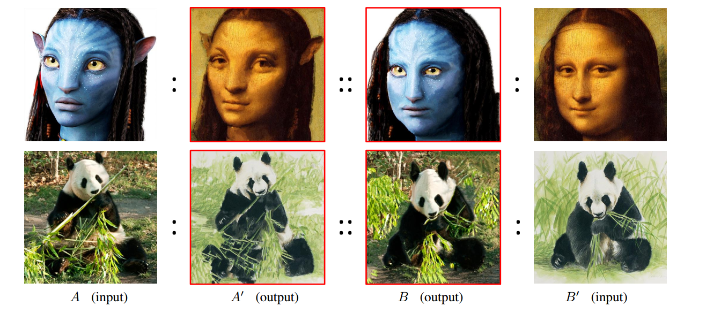

论文《Visual Attribute Transfer through Deep Image Analogy》阅读记录
2017-05-06
昨天看见一个有意思的论文，相似图片视觉特效转换《Visual Attribute Transfer through Deep Image Analogy》，今天拿来读一读，做一些笔记摘录。文章技术点是提取图片明显的视觉特征，进行在类似的图片上进行套用，效果如下。

左边和右边的图片（A input,B’ input）是输入图片，中间的两张图片(A’ output, B output)是输出图片。第一组图片分别是阿凡达和蒙娜丽莎的微笑，特征为人物脸上的色调；第二组图片分别是照片写实的熊猫和水墨风格的熊猫，特征为熊猫的绘制风格。
首先输入图片在语义上是相关的（semantically meaningful dense correspon dences ）[2]，比如第一组图同是侧脸，第二组图同时大熊猫吃竹子。其中图片类似检测的技术是参考了文章Image analogies[1]，通过深卷积中性网络（DCNN，Deep Convolutional Neutral Network）进行特征提取。图片的相似域（nearest-neighbor field）采用了由粗到细的匹配策略，然后根据特征生成新的图片。其中有效的图片特征转换方法有很多种，包括风格纹理转换、颜色风格转换、素描绘制转换、时间序列转换。
低级的图片匹配方法，如光流（Optical Flow[3]）和块匹配（Patch Match[4]）是局部图像匹配，SIFT flow[5]和deep match[5]，采用的是稀疏特征的匹配，无法匹配类似绘画图片和真实照片这样的视觉特征变化，因为它们都是基于低级的特征。
已经提出的不同的风格图片匹配方法，如绘画图片转照片[6]、素描转照片[7]、不同光源下的照片[8]，太过于针对于具体的应用场景，难以泛化。Schechtman和Irani提出了一个更加通用的方法[8]，采用局部自相似区域（local self-similarity descriptors）在不同场景下的图片进行匹配，但是在密相似（dense correspondences）的图片中，也无法检测出细节的不一样。
文章采用Image analogies的方法进行密相似图片的特征映射，采用DCNN构造特征空间。这种深度特征的表示方法比语义结构（semantic structures ）[9]效果更好，即深度图像相似（ deep image analogy）。